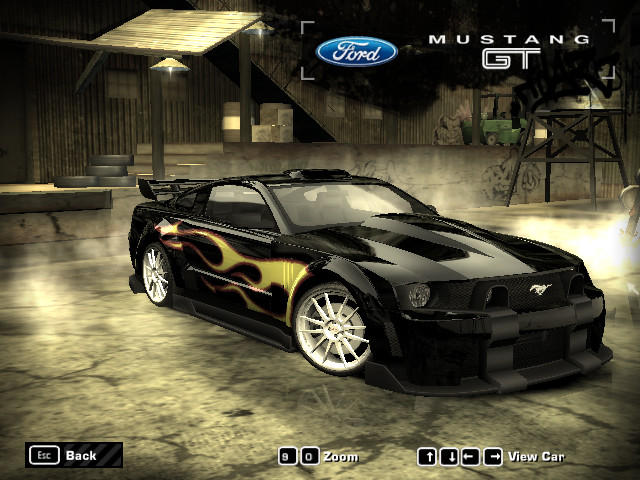

História do Need for Speed
The Need for Speed foi lançado em 1994. Todos os jogos da série consistem em carros de corrida em vários circuitos fechados ou não. Alguns títulos incluem ainda perseguições policiais nas corridas. Em novembro de 2020, foi lançado uma versão remasterizada do jogo Need For speed: Hot Pursuit (2010).
A atriz Simone Bailly, que interpreta uma personagem em Need for Speed: Most Wanted, deixou escapar em um post em suas redes sociais, que um remake do game está em desenvolvimento pela Criterion Games e Electronic Arts, e que será lançado em 2024, acesse aqui o Site o jogo foi feito pela EA Eletronic Arts.

Modelos dos carros
BMW M3 GTS, semelhante a BMW M3 GTR do jogo e o Ford Mustang Boss 302 semelhante ao carro Ford Mustang GT do Razor como prêmios.

Acura NSX 2017 - Esportivo. Acura RSX-S 2004 - Coupé Alfa Romeo Giulia Quadrofoglio 2016 - Performance. Aston Martin DB5 1964 - Clássico. Aston Martin DB11 2017 - Esportivo. Aston Martin Vulcan 2016 - Hipercarro. Audi R8 V10 Performance Coupé 2019 - Supercarro.
Need for Speed funciona como a maioria dos games de corrida: é preciso dirigir um carro e o objetivo é vencer a prova em primeiro lugar. Mas dá pra se divertir ainda mais no modo Torneio, viu? Daí você precisa ganhar corridas pra desbloquear mais veículos e circuitos.
Need for Speed é uma das mais conhecidas e transversais franquias de velocidade nos videojogos, datando do início dos anos 90 na altura na velhinha 3DO, uma consola que foi concebida pelo fundador da EA, Trip Hawkins, em conjunto com a Panasonic. um dos tesouros esquecidos da história do gaming.

Sua chegada à cidade de Rockport City Tudo começa 6 dias antes de uma disputa, a principal na primeira parte do jogo. Você está dirigindo sua BMW M3 GTR pelas ruas de Rockport, quando encontra uma piloto de rua conduzindo um Mazda RX-8. Ambos começam a correr juntos, quando de repente, ao pararem num semáforo, e em cima da faixa de pedestres, aparece um Chevrolet Corvette C6.R, pertencente ao Sargento Cross, um dos principais "vilões" do jogo. A piloto que corria com você consegue escapar, mas Cross se aproxima de você e começa a conversar. Ele e sua companheira de trabalho brincam arrogantemente, tanto com você quanto com seu carro. Ele afirma que as rachas na cidade foram extintas (uma vez que seu trabalho permitiu tal feito), e que tinha uma pequena surpresa para você, assim como para os outros corredores. Assim, ele manda você sair do carro e se prepara para prendê-lo, quando uma chamada de urgência acontece bem na hora. Cross e sua companheira ficam furiosos por terem que deixá-lo, mas o policial deixa bem claro que da próxima vez você não teria sorte. Como punição, ele pega as chaves do Corvette C6R e deixa um enorme risco na sua BMW M3, e por final, brinca dizendo "belos arranhões".
Primeiras corridas Depois de escapar de Cross, você continua correndo pelas ruas de Rockport, procurando por disputas. Em um determinado trecho, você encontra um Toyota Supra, pilotado por Ronald McCrea (Ronnie). Este lhe chama para um racha. Após vencê-lo, ele te leva até um lugar onde estão reunidos outros corredores. Dentre eles, está Clarence Callaham, mais conhecido como Razor, que virá a ser seu principal rival no jogo. Ele te vê como mais um garoto corredor que gostaria de "comer poeira" e ser humilhado, e já demonstra interesse em roubar as peças da BMW. Nesse momento, a piloto que correu com você na sua chegada à cidade aparece. Seu nome é Mia Townsend, e ela te defende, afirmando a todos ali que você é mais rápido do que qualquer um, por ter presenciado sua performance anteriormente. Razor retruca, dizendo que Mia não conhece seu grupo e nem ele direito, e que seu carro, um Ford Mustang GT, deixa qualquer um comendo poeira, e isso inclui seus próprios colegas. Então, Mia decide dar início aos desafios, e pergunta quanto Razor poderia apostar num racha. Este diz que 5 mil dólares estaria ótimo, porém, não seria ele quem iria correr, e sim um de seus comparsas, estando convicto de que um deles poderia facilmente vencer você. Mia provoca Razor, perguntando o que os comparsas tinham a ver com a situação. Este diz que não iria correr com ninguém antes de fazer um teste com seus colegas, algo que Ronnie ressalta logo em seguida, dizendo que, para que você pudesse desafiar Razor (que inclusive estava no 15º lugar da Lista Negra — a famosa Blacklist — dos corredores mais procurados de Rockport e das cidades vizinhas), primeiro deveria ganhar reputação, correndo com outras pessoas. Após todas essa afirmações, um dos colegas de Razor, Toru Sato (mais conhecido como Bull), toma a frente de todos e é o primeiro a te desafiar para um racha. Mia muda de ideia e decide aumentar a aposta para 10 mil dólares, ideia essa que deixa Razor mais animado. Então, este chama todos para assistirem à corrida, inclusive querendo que a polícia também entre na situação. Após toda essa conversa, você inicia a disputa com Bull. Ao vencê-lo, você é desafiado por um homem de nome desconhecido, mas é conhecido como Rog. Este não tem nenhuma ligação com Razor ou a Blacklist (apesar de saber quem eles são), é simplesmente outro corredor que decide testar sua capacidade. Depois de ser vencido também, ele se mostra amigável com você, dizendo que gostou de seu estilo, e que você deveria tomar cuidado com Razor e seus colegas. Imediatamente após ele se despedir, Razor aparece com seu carro e finalmente te desafia. Porém, agora as coisas ficam bem diferentes: de acordo com as regras da Blacklist, para desafiar um membro da mesma, o que deve ser apostado não é dinheiro, e sim o próprio carro (esse tipo de aposta tem o nome de PinkSlip). Então, ele vai embora e diz que estaria esperando.
Need for Speed: High Stakes A obra renova e melhora o modo de perseguições com mais realismo e danos nos carros que afetam suas performances. Além disso, algo como um modo campanha foi introduzido. Permitindo que o jogador ganhe prêmios para melhorar seus veículos e ainda adquirir novos.
- Ferrari 458 Italia
- Honda Civic Type-R
- Acura RSX-S
- Toyota Sprinter GT Apex
- Chevrolet Corvette ZO6
- Dodge Challenger SRT8
- Toyota GT86
- Toyota Supra SZ-R
- Volkswagen Golf GTI
- Porsche 911 Carrera S
- Volvo 242
- Chevrolet Camaro Z28
- Ford Mustang Boss 302
- BMW M3 GTR
- Mercedes AMG GT
Need For Speed: Hot Pursuit (2010) Need For Speed: Shift (2009) Need For Speed: Underground (2003) Need For Speed: Hot Pursuit 2 (2002) Need For Speed: ProStreet (2007) Need For Speed: Most Wanted (2012) Need For Speed: Unbound (2022)
A Blacklist Depois de pouco tempo preso (uma vez que, sem o carro como prova, não seria possível mantê-lo por muito tempo na prisão), você é buscado por Mia. No caminho, ela te explica o que aconteceu enquanto você estava preso: Razor, com sua BMW, atingiu o 1º lugar na Blacklist, e se tornou o corredor mais procurado de Rockport. Com isso, agora você terá um longo trabalho pela frente para recuperar seu carro. A Blacklist é o seu passaporte no jogo pra pegar sua BMW de volta. Para ter a chance de desafiar Razor novamente, você agora deve ganhar reputação, derrotando todos os membros da lista em diversos tipos de eventos, até chegar nele. A partir de então, Mia começa a auxiliá-lo em tudo, desde informações (sobre os corredores, da polícia etc). até a compra de casas onde você poderá descansar e fugir da polícia, caso esteja sendo perseguido. Além dela, Rog também irá ajudá-lo, principalmente enviando informações sobre a Blacklist (o estilo de cada membro, a preferência quanto ao tipo de corrida, além de te avisar sempre que o membro estiver pronto para o desafio). Cada membro da Blacklist terá um certo número de eventos que deverão ser concluídos com sucesso para que sua reputação cresça e você tenha a chance de desafiar e derrotar cada um deles. Os eventos incluem circuitos, passar por cabines de pedágio e ser flagrado a determinada velocidade por radares, além de fugas da polícia de Rockport, onde você deverá danificar viaturas, passar por bloqueios e manter os policiais ocupados na perseguição por um tempo, para somente depois esconder-se. A cada membro vencido, você também recebe marcadores de bonificação, que contém prêmios como o carro do oponente, dinheiro extra, peças extras para seu carro, dentre outros.
Blacklist Clarence Callahan (Razor) - BMW M3 GTR Toru Sato (Bull) - Mercedes-Benz SLR McLaren Ronald McCrea (Ronnie) - Aston Martin DB9 Joe Vega (JV) - Dodge Viper SRT10 Wes Allen (Webster) - Chevrolet Corvette C6 Hector Domingo (Ming) - Lamborghini Gallardo Kira Nakazato (Kaze) - Mercedes-Benz CLK 500 Jade Barrett (Jewels) - Ford Mustang GT Eugene James (Earl) - Mitsubishi Lancer Evolution VIII Karl Smith (Baron) - Porsche Cayman S Lou Park (Big Lou) - Mitsubishi Eclipse Isabel Diaz (Izzy) - Mazda RX-8 Victor Vasquez (Vic) - Toyota Supra Vince Kilic (Taz) - Lexus IS 300 Ho Seun (Sonny) - Volkswagen Golf GTI
Então é isso! Espero que você tenha gostado do nosso Site com essa Curiosidade num dos jogos mais famosos de corridas, para consoles,computador,mobiles.